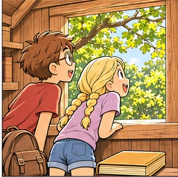
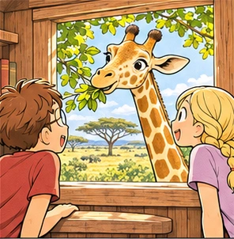
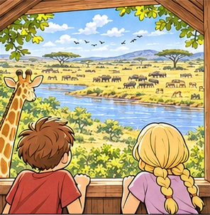
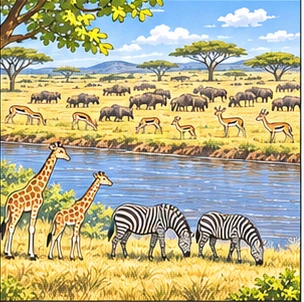

Chapter 2 · Part 1 — Jump, Beasts! Jump!
Bright light flooded the tree house again. A rustling sound came from outside the window.
Annie peeked out and laughed. “Hey, there,” she said.

Jack looked out, too. A giraffe was eating leaves off the tree. It had a sweet, goofy face.

Jack peered at the world beyond the giraffe. He couldn’t believe his eyes.
He saw a huge grassy plain, a wide river, and tons of birds and animals—more than he had ever imagined in one place.

Giraffes and zebras were on the side of the river where Jack and Annie were. Thomson’s gazelles and the big horned animals were on the other side.
“Where are the lions?” said Jack.

“I don’t know,” said Annie. “Do you think it’s always this crowded?”
“Let’s find out,” said Jack.
He picked up the book on Africa and looked at the picture of the animals. He read aloud:
Every year, in late spring, thousands of zebras and gazelles and millions of wildebeests (WILL-duh-beests) migrate from the dry plains of Tanzania to Kenya.
“What’s ‘migrate’ mean?” said Annie.
Jack pushed his glasses into place. “It means they go someplace else for part of the year—like birds going south for the winter.”
“Oh, right,” said Annie.
Jack turned the page to read more.
Before they are safe in Kenya, the animals must first cross the Mara River. Zebras go first, then the wildebeests. The tiny gazelles swim last.
“Ohh,” said Annie in a sad voice.
“What’s wrong?” said Jack.
“Poor beasts.” She looked out the window. “They seem afraid.”
On the far side of the river, the horned animals were standing at the edge of the steep bank of the river. They stared down nervously at the rushing water.
“Jump, beasts! Jump!” Annie shouted.
“Don’t be silly. They can’t hear you,” said Jack.
He studied the broad plain. “I wonder where the lions are,” he said.
“I don’t know. But I have to go,” said Annie.
“Go where?” said Jack.
“To the river to help them,” she said.
“Help who?” said Jack.
“Those wild beasts on the other side!” said Annie. “I have to help them migrate.”
“Are you nuts?” said Jack.
Annie handed Jack the scroll and started out of the tree house.
“Wait a second!” said Jack. “We haven’t even read Morgan’s riddle yet!”
Annie stopped on the ladder.
“Read it now,” she said.
Jack unrolled the ancient scroll and read aloud:
I’m the color of gold and as sweet as can be. But beware of the danger that’s all around me. What am I?
Annie started down again.
“Annie!”
“We’ll look for the answer in a minute,” said Annie.
“What are you doing?” Jack called.
But there was no stopping her. Jack watched as she hopped off the ladder. Then she started to walk through the tall grass, between the zebras and giraffes.
“I don’t believe her,” he said to himself. He quickly put the Africa book into his pack.
He started down the ladder.
When he stepped onto the ground, he looked around carefully.
The giraffes were eating the tree leaves.
The zebras were grazing in the grass.
Tons of birds flapped overhead.
This is okay, he thought. He just had one little question:
Where are the lions?